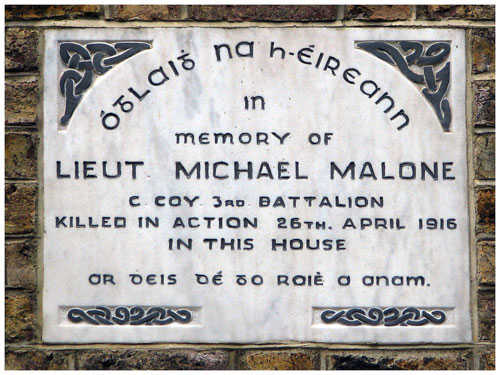

The British troops managed to cut Malone and Grace off from each other leaving them unable to enact their planned last stand at the top of the house. While Grace managed to escape to the cellar, Malone was killed by rifle fire as he descended the building’s main staircase. Grace recalled the moments leading up to Malone’s death in his 1949 Bureau of Military History Statement:
After the battle ended in the small hours of the Wednesday night/ Thursday morning, Malone’s body was buried by British soldiers in the backyard of 25 Northumberland Road but later was reinterred in the Republican Plot at Glasnevin Cemetery. Grace described Malone as his ‘leader and comrade’.
|  |
| Plaque in memory of Michael Malone at 25 Northumberland Road. |
(MAI, BMH WS 310; MAI, MSPR 1D315)